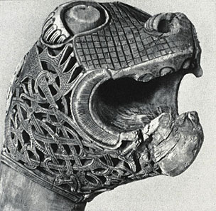

Jesse L. Byock Professor of Old Norse and Medieval Scandinavian Studies, Scandinavian Section Professor, Cotsen Institute of Archaeology University of California Los Angeles

UCLA Scandinavian Section BOX 951539, 212 Royce Hall Los Angeles, CA 90095-1539
www.viking.ucla.edu © 2008